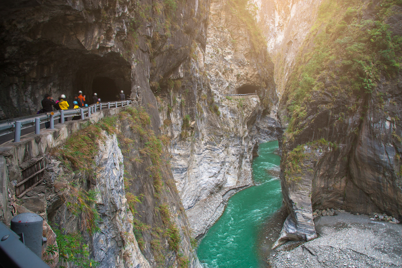
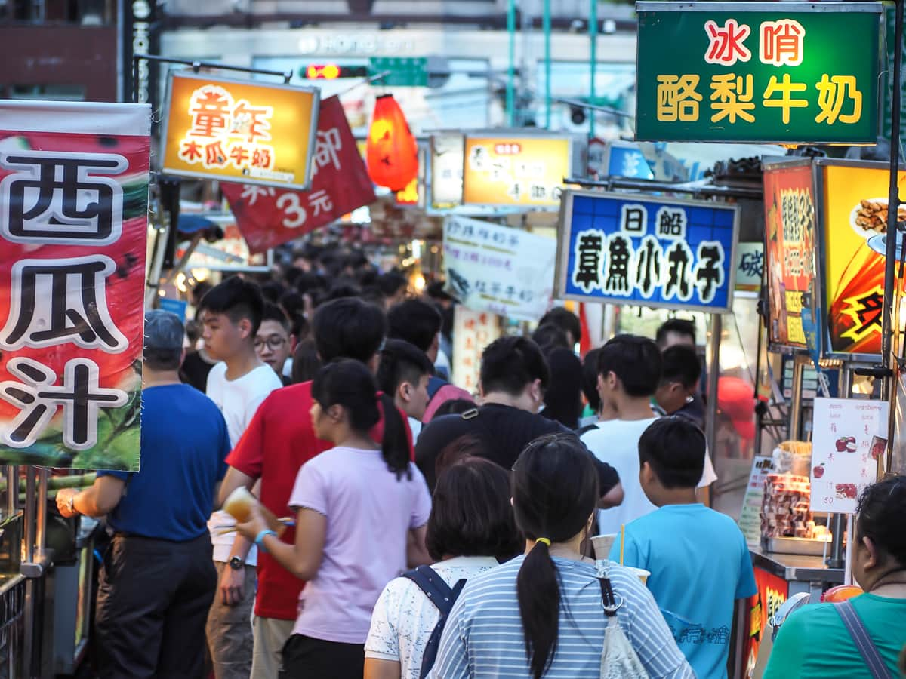
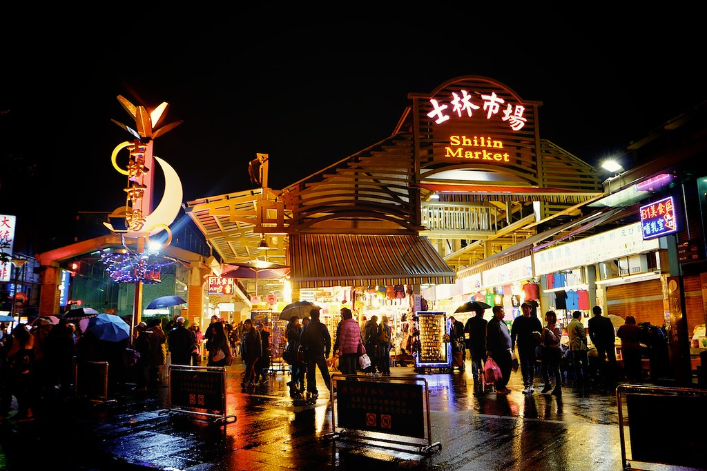
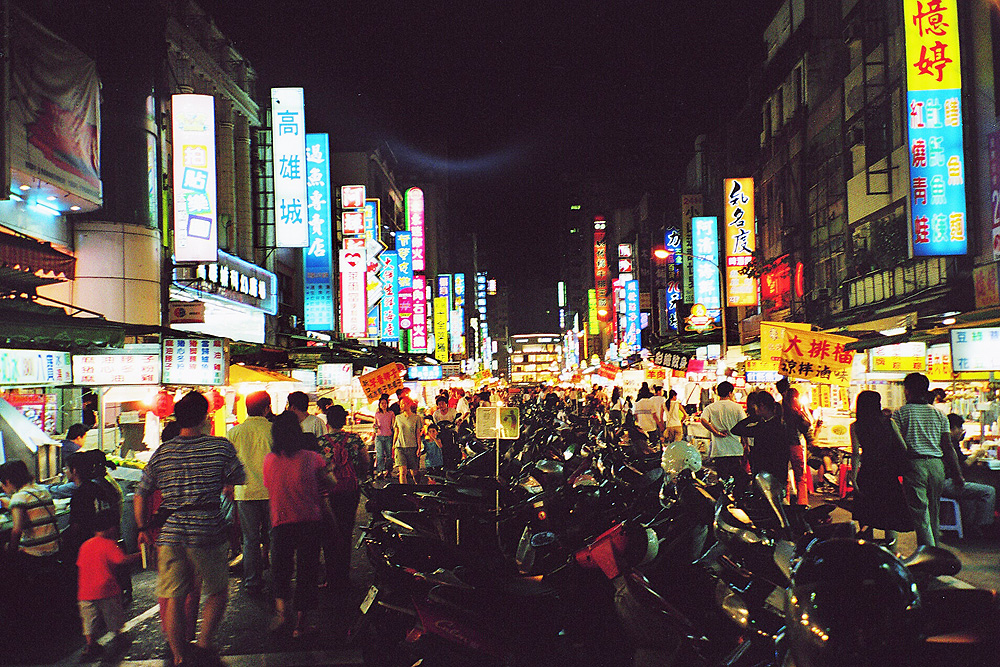
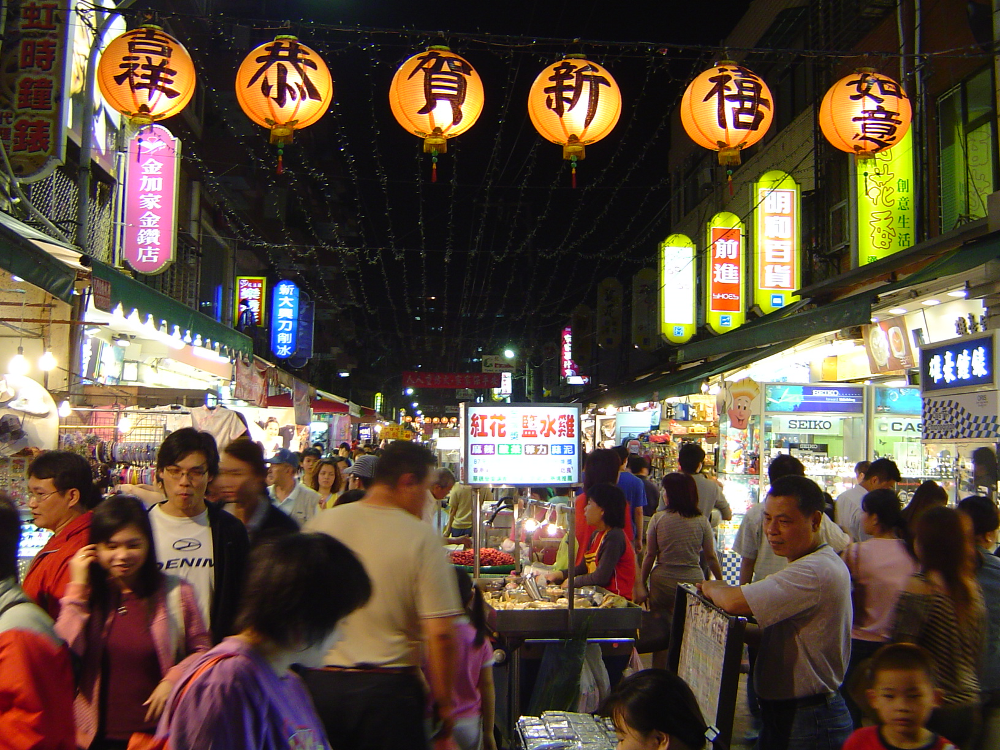

Taiwan is known by many names but perhaps the most memorable one is Formosa. First found by Portuguese explorers in the 16th century, "Ilha Formosa" directly translates to "Beautiful Island".
In the 1990s Taiwan became the first true Chinese democracy, since then, popular culture has blossomed on the island, an eclectic mix of Chinese, Western, Japanese and indigenous influences. It has sensational food, traditional Chinese and aboriginal festivals and exuberant temples, yet the biggest surprise is Taiwan’s unexpected beauty, towering mountains, eight national parks, a selection of alluring offshore islands and numerous hot-spring resorts.
Taroko National Park
Taiwan was created through the collision of the Philippine and the Eurasian plates in what is known as the Penglai Orogeny. This occurred four million years ago and is responsible for the formation of the Central Mountain Range that runs north-south through much of Taiwan.
The rich and varied terrain that has nurtured an opulent plant and animal life in the Park is due in large part to the steep climb in altitude: from the Pacific Ocean on the east border of the Park to the majestic peaks of the Central Mountain Range that make up the Park’s western border one can go from sea level to well over 3000 meters in a day’s time.

Night Markets




The one thing that's a must on every visitor’s itinerary is a night market. Being an integral part of Taiwanese culture, filled with activities, tempting smells, and delicious flavors, it’s impossible to resist Taiwanese night markets. Practically every neighborhood has its own unique night market, Shilin Night Market being one of the original night market that is famous across not just the city but the entire country. It's certainly one of the top attraction in Taipei, the capital of Taiwan.
In order to get the real Taiwanese experience, head out right after the sun goes down to enjoy late night snack and fun activities.